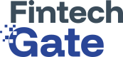

Fintekleri buluşturan dijital köprü.
Finteklerin kapısı startup entegrasyonu için açılıyor. Kurumsal şirketlerin ihtiyaçlarını startup'ların yenilikçi çözümleriyle buluşturmayı ve ticarileşme süreçlerini hızlandırmayı hedefleyen Fintech Gate İstanbul Destek Programı, İstanbul Kalkınma Ajansı (İSTKA) desteğiyle hayata geçirildi.

Programın hedef kitlesi.
Kurumsal sistemlere doğrudan entegrasyon hedefleyen yenilikçi fintek girişimleri ile dijital dönüşümünü açık inovasyonla güçlendirmek isteyen fintek dünyasının öncü kurumlarına yöneliktir.
Kurumsal başvurudan Demo Day'e.
Fintech Gate Proje Yol Haritası sekiz adımdan oluşur.
Kurumsal Başvuru
Kurumsal paydaşların, program başvuruları alınır ve seçim yapılır.
Kurumsal İhtiyaç Analizi
Kurumsal paydaşların teknoloji ve inovasyon alanındaki ihtiyaçları belirlenir.
Kurumsal İnovasyon Hazırlık
Kurumsal paydaşları, startup iş birliğine ve inovasyon yeteneklerini geliştirmeye hazırlamak için eğitim ve toplantılar gerçekleştirilir.
Girişimci Çağrısı
Hızlandırma programına ve iş birliğine hazır, kurumsal ihtiyaçlara yönelik çözüm geliştiren fintekler programa başvuruda bulunur.
Stratejik Eşleştirme
Doğru startup ile doğru kurumu "Üçlü Protokol" ile bir araya getirerek iş birliği ortamı oluşturulur.
Hızlandırma Programı
Startuplara iş fikirlerini geliştirmek ve kurumsal entegrasyona hazır hale getirmek için eğitim ve mentorluk süreci ile destek sağlanır.
Kurumsal Paydaşların Sandbox Altyapısına Erişim ve Pilot Uygulama
Girişimler, kurumsal paydaşların sandbox ortamına entegre edilerek, ihtiyaca yönelik çözümler üreterek pilot uygulamaları gerçekleştirir.
Demo Day ve Ticarileşme
Başarılı olan projeler yatırımcı ve kurumlarla final sahnesine çıkarılarak yatırıma erişim sağlanır.
Program takvimi.
Fintech Gate projesi 2026 sonuna kadar devam edecek.
Girişimci Başvuru
Başvuru Değerlendirme
Eğitim ve Mentorluk
Kurumsal-Startup Eşleştirme
Pilot Uygulama ve Ticarileşme
Demo Day
Fintech Gate Hızlandırma Programı.
Kurumsal ihtiyaçları ve girişimci çözümlerini aynı zeminde buluşturarak güçlü iş birlikleri oluşturuyoruz.
Fintech Gate Hızlandırma Programı, girişimlerin ürünlerini geliştirmesi, kurumsal sistemlere hazırlanması ve ilk iş birliklerini oluşturması için tasarlanmış yoğun bir gelişim programıdır. Program boyunca startup'lar; teknik eğitimler, mentor desteği, kurumsal şirketlerle eşleşme ve birlikte çalışma fırsatı yakalayarak büyümelerini hızlandırma fırsatı yakalar.
Hızlandırma Programı, girişimlerin;
- Ürünlerini doğrulamasını ve ölçeklemesini,
- Kurumsal sistemlere entegre olmasını,
- Sürdürülebilir iş modelleri geliştirmesini,
- Ticarileşme süreçlerini hızlandırmasını
destekleyerek uzun vadeli iş birliklerinin önünü açar.
Finteklerin kapısı startup entegrasyonu için açılıyor.Fintech Gate
Kurumsal paydaşlarımızın sandbox altyapısına erişim ve hızlandırma süreçlerimizle fikirlerin test edilmesini, olgunlaşmasını ve ticarileşmesini destekliyoruz.
Kimler katılabilir?
Girişimci bakış açısını kurumsal deneyimle bir araya getirmek isteyen tüm paydaşlar programa katılabilir.
Girişimciler (Startuplar) için katılım kriterleri
Hızlandırma programına ve iş birliğine hazır, kurumsal ihtiyaçlara yönelik çözüm geliştiren fintekler.
- Dikey UyumlulukÖdeme sistemleri, açık bankacılık, InsurTech, RegTech, siber güvenlik veya gömülü finans alanlarında çözüm üretiyor olmak.
- Teknolojik OlgunlukEn az MVP (Minimum Uygulanabilir Ürün) aşamasında olmak veya ticarileşmiş bir ürüne sahip olmak.
- Ekip YapısıÜrünü teknik olarak geliştirebilecek ve Sandbox entegrasyonunu yürütebilecek yetkinlikte bir çekirdek ekibe sahip olmak.
- ÖlçeklenebilirlikKurumsal paydaşların (Banka, Sigorta vb.) sistemlerine entegre olabilecek ve yüksek işlem hacmini kaldırabilecek bir iş modeline sahip olmak.
- İnovasyon OdaklılıkMevcut finansal süreçlere yenilikçi, maliyet düşürücü veya verimlilik artırıcı bir yaklaşım sunmak.
Kurumsal Şirketler (Partnerler) için katılım kriterleri
Dijital dönüşümünü açık inovasyonla güçlendirmek isteyen fintek dünyasının öncü kurumları.
- Sektörel OdakBankacılık, sigortacılık, ödeme hizmetleri, e-ticaret, perakende veya savunma sanayii gibi fintek çözümlerine ihtiyaç duyan sektörlerde faaliyet göstermek.
- İnovasyon VizyonuKurum bünyesinde dijital dönüşüm veya kurumsal girişimcilik süreçlerini yöneten bir birime veya stratejiye sahip olmak.
- Mentörlük KapasitesiSeçilen girişimlere iş modellerini geliştirmeleri için sektörel tecrübe ve network desteği sunabilmek.
- İş Birliği İştahıUygun bulunan girişimlerle Pilot Çalışma (PoC) yapma veya stratejik yatırım fırsatlarını değerlendirme niyetinde olmak.
Fintech Gate Mentörlük Oturumları.
RakamlarlaKaynak: Fintech Zone Instagram paylaşımı, "Rakamlarla Fintech Gate Mentörlük Oturumları". Bu bilgi resmi web sitesinde yer almıyor.
Fintech Gate'te gelişmeler.
2026 sonuna kadar devam edecek olan projemizle ilgili gelişmeleri bu bölümde inceleyebilirsiniz.
- Gelişme 01
Kurumsal Paydaş Çalıştayı Yapıldı
Fintech Gate Kurumsal Paydaşlar Çalıştayı'nı, değerli paydaşlarımızın katılımı ve katkılarıyla başarıyla gerçekleştirdik. Haberi okuyun
- Gelişme 02
İlk Webinar Gerçekleştirildi
Ziraat Teknoloji Genel Müdürü Sayın Bayram Tuzcu ile finansal teknolojilerdeki güncel gelişmeleri, sektörel dönüşümü ve geleceğin teknoloji trendlerini değerlendirdik. Webinar serisi
- Gelişme 03
Fintech Gate Girişimci Eğitimleri Serisi Başarıyla Tamamlandı
Finansal veri güvenliği, KVKK & GDPR, veri bilimi, fintek analitiği, dijital ürün yönetimi ve regülasyonlar gibi pek çok alanda uzman isimleri girişimcilerimizle buluşturduk.
- Gelişme 04
Kick-off Toplantısı ve İlk Eğitimimizi Yoğun Katılımla Gerçekleştirdik
İleri aşama girişimlerin kurumsal iş birliklerini güçlendirmeyi ve büyüme süreçlerini desteklemeyi amaçlayan programımız, eğitim, mentörlük ve stratejik eşleştirmelerle devam edecek.
- Gelişme 05
Fintech Gate Hızlandırma Programı
Fintech Gate Hızlandırma Programı, girişimlerin ürünlerini geliştirmelerini, kurumsal yapılara hazırlanmalarını ve yeni iş birlikleri kurmalarını destekleyen kapsamlı bir gelişim programıdır. 15 Haziran'a kadar başvurunuzu tamamlamayı unutmayın!
- Gelişme 06
İSTKA'nın Destekleriyle Hayata Geçirilen Fintech Gate Lansmanını Gerçekleştirdik
İstanbul Kalkınma Ajansı (İSTKA) desteğiyle hayata geçirilen Fintech Gate İstanbul Destek Programı'nın lansmanını, İstanbul Finans Merkezi ev sahipliğinde gerçekleştirdik.
- Gelişme 07
Fintech Gate Başlıyor!
Kurumsal şirketlerin ihtiyaçlarını startup'ların yenilikçi çözümleriyle buluşturmayı ve ticarileşme süreçlerini hızlandırmayı hedefleyen Fintech Gate Destek Programı başlıyor!
Proje paydaşları ve iştirakler.
Fintech Gate projesi İstanbul Kalkınma Ajansı (İSTKA) desteğiyle yürütülüyor.
Fintech Zone
İstanbul Finans ve Teknoloji Üssü
İstanbul Kalkınma Ajansı
İSTKA
İstanbul Üniversitesi
Ser Danışmanlık & Craftgate
Bu yayın, İstanbul Kalkınma Ajansının desteklediği "İş Birliği İstanbul – Kurumsal Şirketler ile Startuplar Arası İş Birliklerini Güçlendirme Mali Destek Programı" kapsamında hazırlanmıştır. İçerik ile ilgili tek sorumluluk Fintech Zone İstanbul'a aittir ve İstanbul Kalkınma Ajansı ile Kalkınma Ajansları Genel Müdürlüğü'nün görüşlerini yansıtmaz.